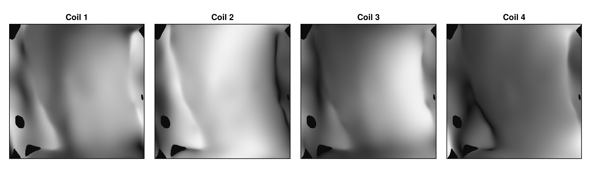
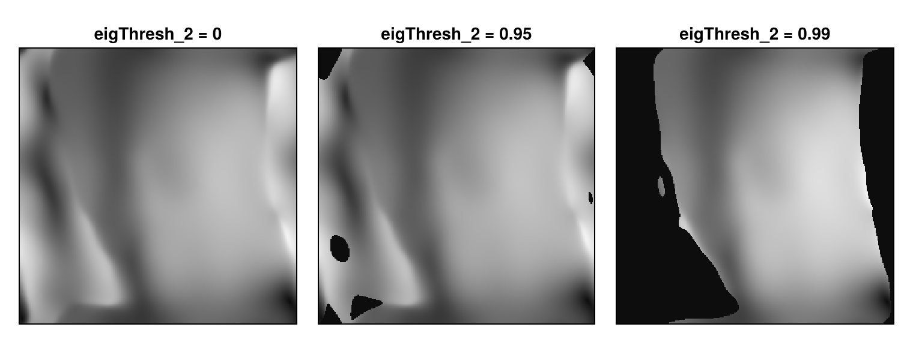

Estimate Coil Sensitivities with ESPIRiT
Reconstruction types that reconstruct one image from the data of several coils, such as "multiCoil", need the sensitivity of each coil as a map. espirit from MRICoilSensitivities estimates these maps with ESPIRiT from a fully sampled region in the center of Cartesian k-space, the calibration region. This guide shows how to choose the calibration region, mask voxels without signal, use a separate calibration scan or calibration data in an array, and handle 3D and non-Cartesian data. Multi-Coil Reconstruction uses such maps in a reconstruction.
Estimating the Maps
The example uses the knee data from Direct Reconstruction, which has eight coils. As in Multi-Coil Reconstruction, it is undersampled such that the 30 profiles in the center of k-space are kept:
using MRIReco, MRIFiles, MRISampling, MRICoilSensitivities
using Pkg.Artifacts
artifacts = joinpath(pkgdir(MRIReco), "docs", "Artifacts.toml")
datadir = ensure_artifact_installed("MRIRecoDocsData", artifacts; io = devnull)
acqDataFull = AcquisitionData(ISMRMRDFile(joinpath(datadir, "knee_3dFSE_slice170.h5")))
acqData = sample_kspace(acqDataFull, 4.0, "poisson", calsize = 30, seed = 1234)
sensitivities = espirit(acqData, (6, 6), 30)
size(sensitivities)(320, 320, 1, 8)The second argument is the size of the ESPIRiT kernel and the third one the size of the calibration region, here 30 × 30 samples. For 2D data, they default to (6, 6) and 24. The result has the dimensions x, y, z and coils, where z counts the slices of 2D data. This is the layout that params[:senseMaps] expects. The maps are complex and normalized: in each voxel that is not masked (see below), the squared magnitudes of all coils add up to one. The following figure shows the magnitude of the first four maps:
using CairoMakie
fig = Figure(size = (1000, 290))
for coil in 1:4
ax = Axis(fig[1, coil], title = "Coil $coil", aspect = DataAspect(), yreversed = true)
heatmap!(ax, abs.(sensitivities[:, :, 1, coil])', colormap = :grays)
hidedecorations!(ax)
end
fig
Choosing the Calibration Region
espirit takes the calibration data from the ncalib × ncalib samples in the center of k-space, where ncalib is the third argument. This region must be fully sampled and at least as large as the kernel. For undersampled data, choose it no larger than the fully sampled center, here the 30 profiles kept by calsize. With a larger value, the calibration data contains samples that were not measured, and the maps become less accurate. Without a fully sampled center, the maps are wrong. A region that is much smaller than the default also gives less accurate maps.
Masking Voxels without Signal
For each voxel, ESPIRiT computes an eigenvalue, which is close to one in voxels that contain signal. espirit sets the maps to zero in all voxels whose eigenvalue is below the keyword eigThresh_2, which defaults to 0.95. A higher threshold masks more voxels, and eigThresh_2 = 0 keeps the maps everywhere:
fig = Figure(size = (760, 290))
for (i, threshold) in enumerate((0, 0.95, 0.99))
maps = espirit(acqData, (6, 6), 30, eigThresh_2 = threshold)
ax = Axis(fig[1, i], title = "eigThresh_2 = $threshold", aspect = DataAspect(),
yreversed = true)
heatmap!(ax, abs.(maps[:, :, 1, 1])', colormap = :grays)
hidedecorations!(ax)
end
fig
In this slice, the default masks only some patches of the background, and 0.99 masks a large part of it. A threshold that is too high also masks voxels inside the object. The data does not constrain the image in masked voxels: with masked maps, the CG-SENSE reconstruction of Multi-Coil Reconstruction is zero in these voxels, whereas its reconstruction with wavelet regularization is not.
Using a Separate Calibration Scan
The maps can also be estimated from a separate scan with a lower resolution that covers the same field of view. Pass the size of the maps as the fourth argument, and espirit computes them on this grid instead of the grid of the calibration scan. Choose the calibration region no larger than this scan. In the example, the central 64 × 64 samples of the knee data stand in for such a scan:
kspace = kDataCart(acqDataFull)
calibScan = AcquisitionData(kspace[129:192, 129:192, :, :, :, :])
sensitivities = espirit(calibScan, (6, 6), 24, (320, 320))
size(sensitivities)(320, 320, 1, 8)A size that is smaller than the encoding size of the data in one of the dimensions is ignored.
Calibration Data in an Array
If the calibration data is not part of an AcquisitionData object, pass it as an array with the dimensions kx, ky and coils, or kx, ky, kz and coils, followed by the size of the maps and the kernel size. The array does not have to be square. The result has the dimensions x, y and coils, or x, y, z and coils, and a last dimension with one entry. For params[:senseMaps], remove this dimension from 3D maps with dropdims(maps, dims = 5), and exchange the last two dimensions of 2D maps:
calibData = kspace[146:175, 146:175, 1, :, 1, 1]
maps = espirit(calibData, (320, 320), (6, 6))
sensitivities = permutedims(maps, (1, 2, 4, 3))
size(calibData), size(maps), size(sensitivities)((30, 30, 8), (320, 320, 8, 1), (320, 320, 1, 8))The last dimension of maps belongs to the keyword nmaps, which requests several sets of maps. With an AcquisitionData object, nmaps = 2 returns the first set twice (#355), so use an array for this.
Several Slices, Contrasts and Repetitions
For 2D data with several slices, espirit estimates the maps of each slice from the calibration region of that slice. It uses the first contrast and the first repetition, and the keywords echo and rep select another one. echo gives correct maps only if the selected contrast has the same sampling pattern as the first one (#356).
3D Data
For 3D data, the kernel size has three entries and defaults to (6, 6, 6), and the calibration region is a cube that must fit into the data in all three directions, as in espirit(acqData, (6, 6, 6), 24). The result again has the dimensions x, y, z and coils. With these sizes, the estimation takes much longer than in 2D. A smaller kernel or calibration region reduces the time.
Differences between Calls
By default, espirit computes the maps with power iterations, which use a random starting vector, so the maps differ slightly from call to call. With use_poweriterations = false, it computes them with an eigendecomposition, which does not use random numbers but takes longer.
Non-Cartesian Data
espirit supports only Cartesian data. Non-Cartesian 2D data can be regridded to a Cartesian grid first with regrid, as in espirit(regrid(acqData, (128, 128))).
This page was generated using Literate.jl.